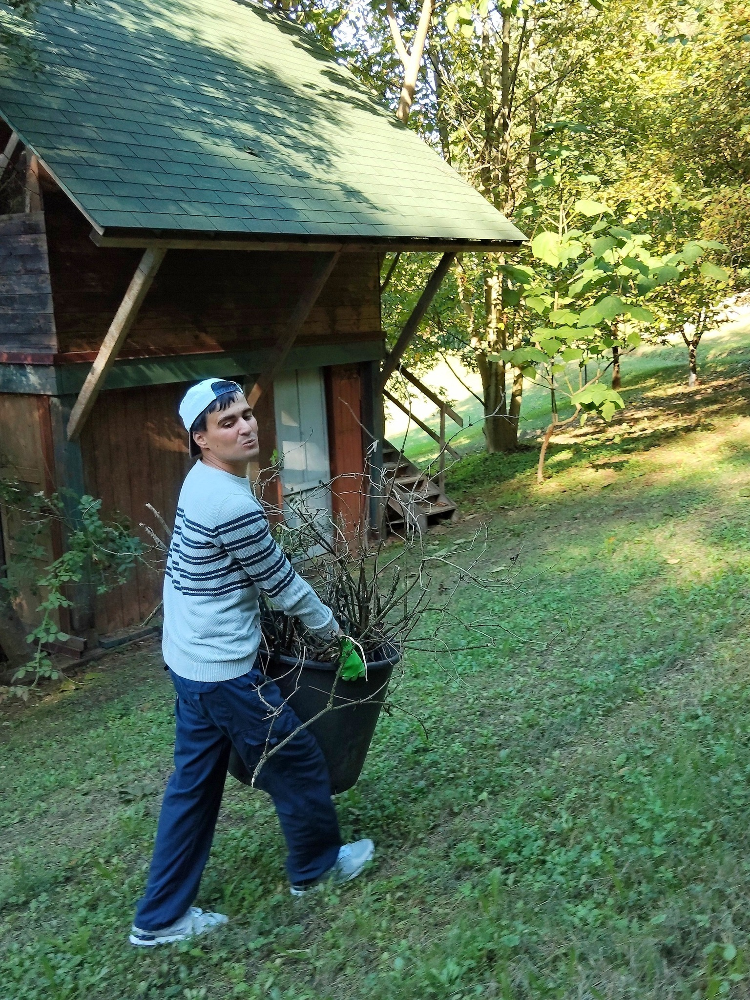
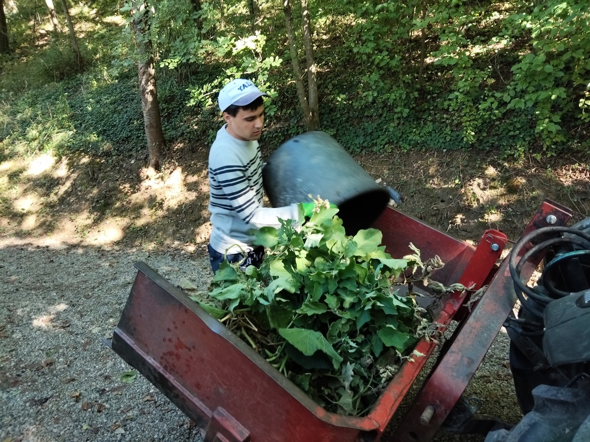
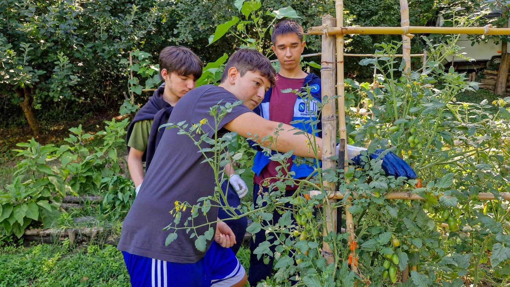
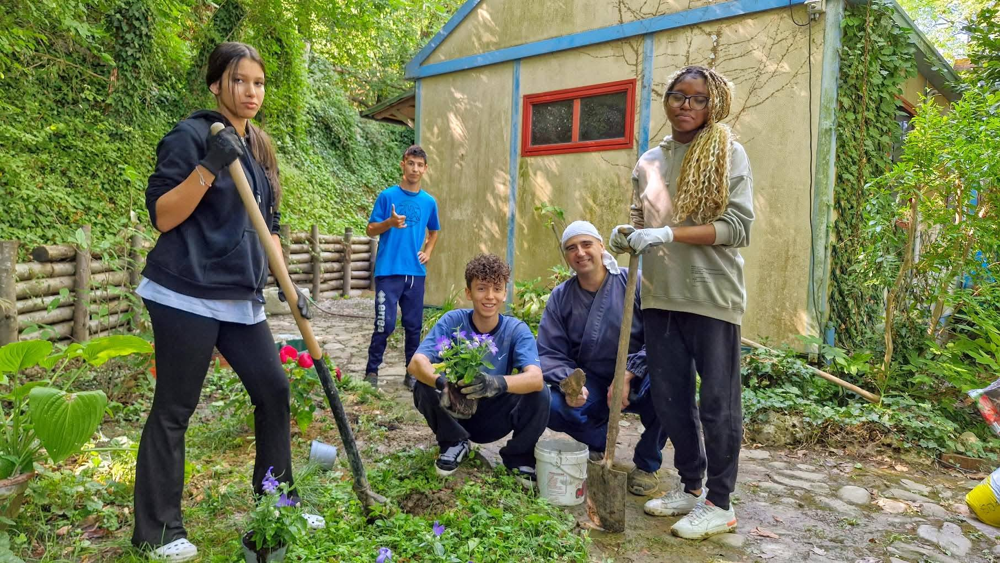
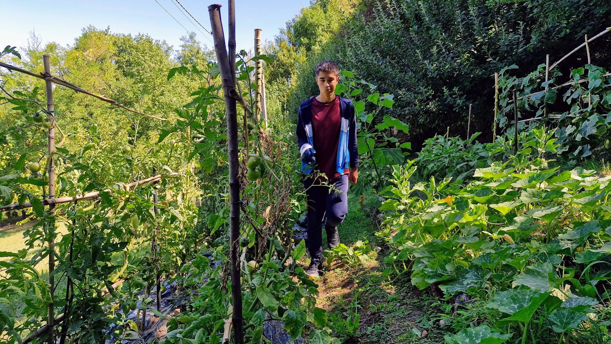

Coltivazione biologica e cura dell'orto in un ambiente naturale

Scopri il piacere di coltivare la terra con i nostri laboratori di orticoltura biologica. Un'esperienza che unisce il contatto con la natura, l'apprendimento di tecniche agricole sostenibili e la soddisfazione di vedere crescere ciò che hai piantato con le tue mani.
Disponiamo di un orto biologico dove sperimentiamo metodi di coltivazione naturali e sostenibili. Un luogo dove imparare a rispettare i tempi della natura e scoprire la biodiversità delle piante orticole.
Le attività di orticoltura sono aperte a tutti, dai bambini che vogliono scoprire da dove arriva il cibo che mangiano, agli adulti che desiderano apprendere tecniche di coltivazione per il proprio orto domestico. Ogni stagione offre lezioni pratiche diverse.
Contattaci per maggiori informazioni sui prossimi corsi e per prenotare il tuo posto!
Contattaci Scopri altre attivitàScopri il nostro orto e le attività attraverso le immagini





